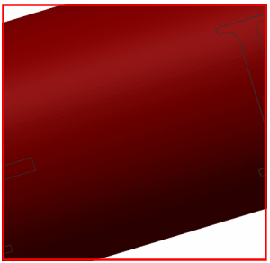

Remove unnecessary faces
Use the Delete Face command to remove the lettering on the frame. To select the faces to delete, you can use several selection methods.
 Delete Face (Synchronous Modeling group)
Delete Face (Synchronous Modeling group)
-
Face Rule (Top Border bar)
Boss or Pocket Faces

-
 Select the bottom face of the letter D.
Select the bottom face of the letter D.
Apply
-

Continue removing the remaining letters on the front and back of the frame.
Cancel